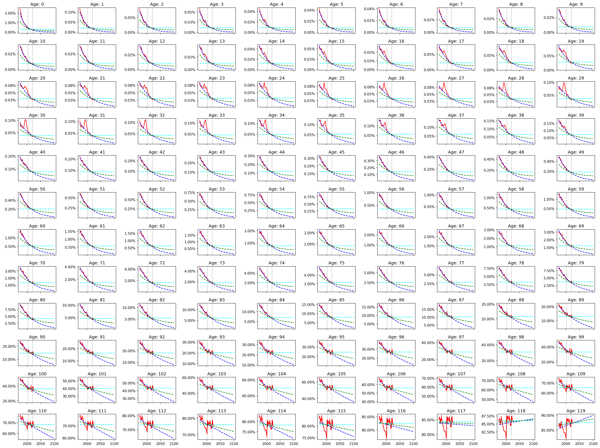

This is a visualization of a model of the resident population in Italy, projected till 2100. The model is based on the historical demographic data published by ISTAT (Italian National Institute of Statistics), whose database is explored in Notebook#05.
All calcuations, starting from raw data, are available for inspection in the GitHub repository for this project. Don't hesitate to contribute!
Tips for visualization: best way is to browse the web page on a computer, as you can hover the mouse on the plots and check the data in detail (often more convenient than comparing the colors to the legend). Still acceptable for smartphone visualization, it is better to turn it horizontal. The page does contain a lot of interactive plots, so it may take a while to load. Be patient, please!
From the database of ISTAT we can plot the number of residents in Italy, grouped by age (cohorts), as counted at the first of January, since 2002 (Notebook#14). By sliding the cursor you can navigate through the years, till the most recent data, and note several features in this distribution: the peak of baby boomers, the decline in births, and the wells created by the WW1, the Spanish flu and the WW2. In 2002, the well around 81-86 y.o. could be attributed to the difficult birth conditions in 1916-1921, plus the deaths of soldiers who were 19-29 in 1940-1945. Also in 2002, the well around 55-61 y.o. could be attributed to the difficult birth conditions in 1941-1947.
Given this peculiar fingerprint of the Italian distribution of population, when a new year passes we can expect the number of residents with a certain age, i.e. the "cohorts", to be the same as the number of residents one year younger the previous year, if not because of deaths (always decreasind the count) or the migration balance (increasing or decreasing the count depending on its net balance).
In the next plots it is shown this change of population by age, for each year of observation: this will be referred to as "Cohort Change Ratio" (where "cohorts" are the groups of people born in the same year). Each year of observation refers to the change in cohorts between the first of January of the year and the first of January of the next year. In case of no deaths and a zero net migration balance, the cohorts would remain constant showing always a value of 0%. This is certainly not the case, showing positive/negative %-change among young and mid-age residents, and negative %-change among older residents, mainly impacted by the deaths.
Note that 2020 has an outlying curve, which is not mainly attributed to the COVID but to a change in the methodology of counting
As this Cohort Change Ratio computed directly from the population count mixes together the effects of deaths and net migration balance (and possiblely some other artifacts, e.g., due to changes in the methodology of counting), I will try to disentangle these two effects in the next sections. Indeed, ISTAT provides also the probability of death by age and year of observation and the net migration balance by age. The importance of disentangling these two effects is that the net migration balance is a policy variable that could suddenly change and for which we need to assume some future scenarios, while the probability of death is a slow variable where I can extrapolate the trend for a projection in the future.
The probability of death by age and year of observation provided by ISTAT has been investigated in Notebooks #20, #25 and 30. ISTAT data on mortality comes from a robust methodology and provides data back to 1974 (red curve in the plot below).
As we can expect, the probability of death decreased in the last decades, expecially among the eldest people, due to increase care technology. To predict the future probability of death I could use an exponential regression (blue), or to assume that it will stay constant at the average value of the last years (cyan): not knowing which one is the best approach, I considered an average of the two, as shown in the next plot in green (Notebook#63).
By subtracting the probability of death from the year-on-year change in the population, I can obtain the net migration balance for each age group (Notebook#45). Note, as it was explained before that 2020 has weird values due to the change in the methodology of counting, so I excluded it from the compute of the avarage.
If we sum all the ages, we obtain the total net migration balance which can compared directly with the data from ISTAT: these are collected with a different methodology, so it makes sense not to have exactly the same values. From the plot below, we have enough agreement between computed and collected data, to state what is the range of values we saw in the past and assume some reasonable average.
To predict the amount of net migrants, by age, I will consider 3 scenarios: no migration, an average total amount of migrants (i.e., around 250k people per year), and twice this average amount (i.e., around 500k people per year, as reached in 2003 and 2007). Note that I will spread this total amount of migrants according to the average distribution of ages (traced above in black): as I don't see evident shifts in this distribution, I'll keep it constant.
Newborns are a computed from the amount of potential mothers in the range of 18-50 years old. In the next plot we see the probability that women of a certain age have to give birth computed by ISTAT.
As we can see an evident trend in this ditribution, in Notebook#40 I compute the coefficient to propagate this trend in the future.
After knowing the normalized distribution fertility by age, and simply assuming that half the Italian residents are women, I still need to guess the total fertility rate for each year. For this I willi consider 3 scenarios: the first is a declining trend seen since 2008 that will lead to a distopian zero fertility rate in 2100, the second is keeping the same value as last year, the last is to assume an increasing fertility up to 2 in 2100.
Note from the graph that the backfitted value of the fertility rate from the age-probability, population, and assuming 50% women, is sligtly different from the official valus from ISTAT due to unavoidable small differences in the methodology, but it is anyway a very close. The plot also contains ISTAT's projections for the future fertility rate, with uncertainty intervals, which are estimated till 2080.
From the last sections I have now all the elements to forecast the future population, combining the 3 scenarios of fertility, and 3 scenarios of net migration balance Notebook#70. The orange area highights 18-50 years old range, the age of women who can potentially give birth to the next generation.
Summing all ages, we obtain the total resident population till 2100, compared with ISTAT's projections till 2080.
In order to highlight the shift in the composition of the population, the next plots shows the amount of people belonging to three representative groups: under 21, 21-69, and 70+ years old.
Change in High-school age population (14-18 y.o.):
Number of potential mothers, i.e., the number of women weighted by their probability of having a child according to their age. This is by definition equal to the number of newborns when keeping fertiliy constant to one.
All plots in this sections are generated from Notebook#73.
The scenarios described here are clearly a semplification to test the sensitivity of the model to first-effect variations. To stress this concept I just list here some possible second-order effect that one could consider to improve the model at the cost of embedding more opinionated assumptions.
This is just a quick brainstorming, that reminds the reader to take the output of the model with a grain of salt. The model is not meant to be a granitic prediction, but rather a tool to understand the dynamics of the population.
I will take a pragmatic approach here to estimate the future age of retirements based on the projections of the population, and the assumption that the ratio between working people and retired people will remain constant.
Assuming an average age of 20 years old to start working, and keeping constant an average historical ratio of 2.2 working people per retired person (Notebook#84) I can forecast the expected retirement age for the 9 scenarios.
That's all folks!
Any comment? Write me!